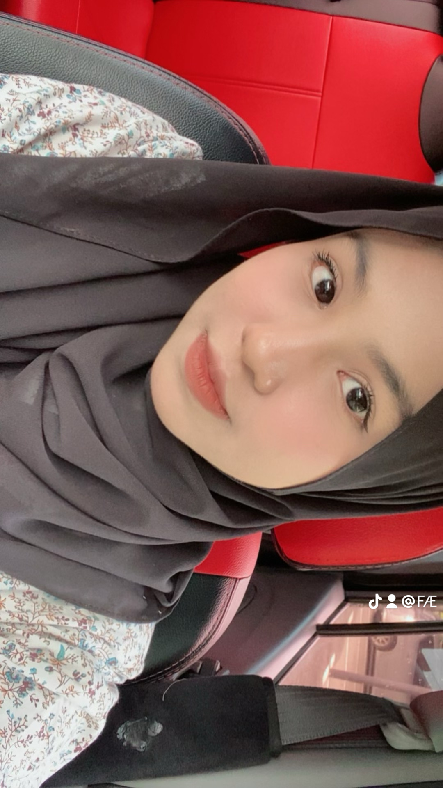
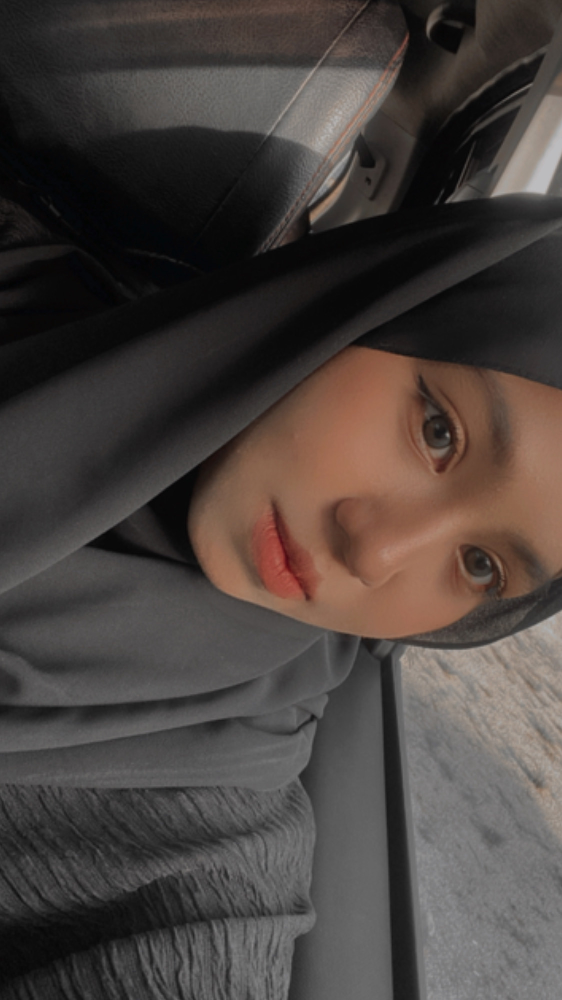

Gallery
Project 1 Description

Project 2 Description

Project 3 Description

Hi, I’m Ainur Fatini, a 20-year-old Information Management student, and I like to think of myself as a curious soul who loves to explore all aspects of life.
Whether it’s learning a new skill, trying a new dish (my kitchen is my laboratory), or diving headfirst into exciting adventures, I’m always eager to step out of my comfort zone and see where the world takes me.
Life, to me, is all about growth, and I believe that every new experience has something valuable to offer.
When I’m not studying or exploring new ideas, you’ll likely find me in the kitchen baking something sweet or cooking up a storm.
I have a soft spot for experimenting with recipes, and there’s nothing quite like the joy of creating something delicious and sharing it with others.
If you ever need a taste tester for your next baked good or an inspiration for your next dinner, I’m your person! (Disclaimer: I might eat half of it before you even get a chance to try it).
On the flip side, I’m also passionate about sports, and badminton is my go-to.
Whether it’s a casual game with friends or a serious match, I love the challenge and the thrill of a good rally.
If you’re ever looking for a doubles partner or a friendly competition, I’m always up for a game (just don’t expect me to go easy on you!).
As much as I love my hobbies, I have big dreams for the future.
I’m working hard to become a lecturer, and I hope to one day share my passion for learning with others.
There’s something special about helping students discover their potential and guiding them as they grow—maybe that’s why I get so excited about teaching and mentoring.
This website is just a small glimpse into my world.
It’s where I document my journey, share the things I’m passionate about, and maybe, just maybe, sprinkle in a few silly jokes along the way.
(Warning: My sense of humor might be a little cheesy, but I promise it's all in good fun!)
So, whether you’re here to learn more about me, find inspiration, or just enjoy a good laugh, I hope you find something that sparks your interest.
Thanks for stopping by!
Project 1 Description

Project 2 Description
Project 3 Description
If you would like to get in touch with me, feel free to contact me.